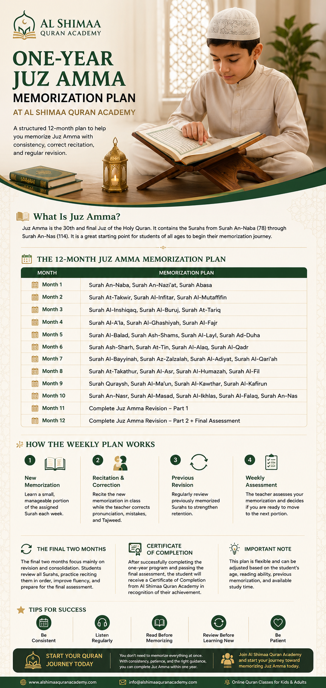

One-Year Juz Amma Memorization Plan at Al Shimaa Quran Academy

Memorizing Juz Amma in one year can be an achievable goal with a realistic schedule, regular revision, and suitable guidance. Students can work through the Surahs gradually while developing accurate Quran reading and recitation habits.
Focus on accurate memorization and consistent revision rather than speed. Adjust the daily workload to your age, reading level, and available practice time.
Book a Free Trial Class →What Is Juz Amma?
Juz Amma is the 30th and final Juz of the Quran. It begins with Surah An-Naba (78) and ends with Surah An-Nas (114).
Many of its Surahs are relatively short, making Juz Amma a common starting point for Quran memorization. However, students should also work on correct pronunciation, Tajweed, and revision as they learn new passages.
Can You Memorize Juz Amma in One Year?
A one-year plan can provide useful structure, but it should not be treated as a strict deadline. Students have different reading abilities, learning speeds, and commitments. Some may need additional time for particular Surahs or for strengthening previously memorized passages.
The schedule below follows the Quranic order of the Surahs. It is a suggested framework, not a guarantee that every student will complete each section within the same month.
The 12-Month Juz Amma Memorization Plan
| Month | Suggested Memorization |
|---|---|
| Month 1 | Surah An-Naba, Surah An-Nazi'at, and Surah Abasa |
| Month 2 | Surah At-Takwir, Surah Al-Infitar, and Surah Al-Mutaffifin |
| Month 3 | Surah Al-Inshiqaq, Surah Al-Buruj, and Surah At-Tariq |
| Month 4 | Surah Al-A'la, Surah Al-Ghashiyah, and Surah Al-Fajr |
| Month 5 | Surah Al-Balad, Surah Ash-Shams, Surah Al-Layl, and Surah Ad-Duha |
| Month 6 | Surah Ash-Sharh, Surah At-Tin, Surah Al-Alaq, and Surah Al-Qadr |
| Month 7 | Surah Al-Bayyinah, Surah Az-Zalzalah, Surah Al-Adiyat, and Surah Al-Qari'ah |
| Month 8 | Surah At-Takathur, Surah Al-Asr, Surah Al-Humazah, and Surah Al-Fil |
| Month 9 | Surah Quraysh, Surah Al-Ma'un, Surah Al-Kawthar, and Surah Al-Kafirun |
| Month 10 | Surah An-Nasr, Surah Al-Masad, Surah Al-Ikhlas, Surah Al-Falaq, and Surah An-Nas |
| Month 11 | Revision of Juz Amma, focusing on the first half and any difficult passages |
| Month 12 | Revision of the complete Juz Amma, recitation practice, and a progress assessment |
Surahs vary considerably in length and difficulty. Do not force the same amount of memorization every month. If a student needs more time, continue revision and adjust the plan with the teacher.
How to Organize Your Weekly Memorization
A useful weekly routine includes new memorization, teacher correction, and revision. The exact number of lesson days depends on the student's schedule and needs.
1. Learn a Manageable Portion
Choose a small passage that the student can read and understand at their current level. Listen to a reliable recitation and repeat the passage carefully before attempting to recite it from memory.
2. Practise Correct Pronunciation
Recite the new portion to a qualified teacher who can correct pronunciation, Tajweed, and memorization mistakes. Avoid repeatedly practising a word incorrectly without correction.
3. Revise Previously Memorized Surahs
Review older passages regularly instead of focusing only on new material. If the student struggles to recall a previous Surah, spend additional time reviewing it before increasing the workload.
4. Check Progress Each Week
At the end of the week, review what the student can recite accurately and identify passages that need more practice. Move forward when the current material is reasonably secure, rather than following the calendar regardless of progress.
Why Is Revision So Important?
Learning a Surah once does not guarantee that it will remain memorized. Regular revision helps students retain what they have learned and notice recurring mistakes.
- Review recently memorized verses frequently.
- Return to older Surahs throughout the week.
- Practise reciting complete Surahs without looking at the Mushaf.
- Repeat difficult passages until they become more secure.
- Ask a teacher to correct recurring pronunciation mistakes.
How Should the Final Two Months Work?
The final two months of this suggested plan focus mainly on revision and assessment. Students can review the complete Juz Amma, practise reciting Surahs in order, and revisit passages that remain difficult.
If the student has not yet memorized every Surah, the plan should be adjusted. Completing the material accurately is more important than meeting a calendar deadline.
Tips for Memorizing Juz Amma Successfully
- Be consistent: establish a regular practice routine that fits daily life.
- Listen carefully: repeated listening can help students become familiar with the verses and pronunciation.
- Read accurately: work on reading skills and pronunciation before increasing the memorization load.
- Revise before adding too much: protect previous memorization as new Surahs are learned.
- Be patient: progress varies by student, and slower progress is not necessarily failure.
- Ask for guidance: a teacher can adjust the workload and identify areas that need extra attention.
Can Children Memorize Juz Amma in One Year?
Children can work toward memorizing Juz Amma within one year when the routine is appropriate for their age, reading ability, and concentration. Younger students may benefit from shorter sessions and more frequent breaks.
Parents can support their children by encouraging revision, celebrating steady effort, and avoiding comparisons with other children. A teacher can help decide how much new material is appropriate at each stage.
What If You Fall Behind the Plan?
Falling behind does not mean that the plan has failed. Some Surahs may take longer to learn, and students may need extra time to strengthen pronunciation or recall.
When progress slows, review the current material, reduce the amount of new memorization temporarily, and discuss the schedule with the teacher. Adjusting the plan can help students maintain confidence and build stronger long-term habits.
Frequently Asked Questions
Can I memorize Juz Amma in one year?
Yes. With a consistent schedule, regular revision, and appropriate teacher guidance, memorizing Juz Amma within one year can be a realistic goal. The pace should be adjusted to the student's needs.
How much should I memorize each day?
The amount depends on the student's age, reading ability, previous memorization, and available study time. A small portion memorized correctly is better than trying to memorize too much at once.
Can children memorize Juz Amma in one year?
Children can follow a one-year Juz Amma plan when the memorization amount is adjusted to their age, reading level, and concentration, with regular revision and teacher guidance.
Is revision important after memorizing Juz Amma?
Yes. Regular revision is essential for strengthening Quran memorization and helping students retain previously memorized Surahs.
What should I do if I fall behind the memorization plan?
Review the material already learned, reduce the amount of new memorization temporarily, and adjust the schedule with your teacher. Accuracy and retention are more important than finishing on a strict deadline.
Start Your Quran Memorization Journey
Memorizing Juz Amma is a journey built through consistent practice, patient revision, and correct recitation. A structured plan can help students stay organized while allowing enough flexibility for their individual needs.
Al Shimaa Quran Academy offers online Quran learning for students who want guidance with recitation and memorization.